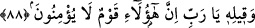
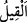
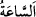
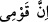
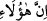
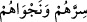

inanmanın zorunlu olduğunu ifâde etmektedir. Halbuki işitmekle zorunlu şeyler vâcip
olmaz. Eğer “Allah Teâlâ kâfirlerin henüz işitmeden Allah’ın birliğini ikrâr ettiklerini
haber vermektedir” dersen bende şöyle derim: “Kâfirler bu ikrârı bir delile dayanıp
zarûreten değil, taklid yoluyla yapmaktadırlar. Şu da bilinmektedir ki, mülhid ve
kâfirlerden yaratıcıyı inkâr eden niceleri vardır. Şâyet bu hâl zarûrî olsaydı, bu konuda
iki kişi bile ihtilâf edemezdi.
Şâir der ki:
Hiç ustası olmayan bir ev gördün mü?
Hiç ressamın elinden çıkmayan bir resim işittin mi?
Kim insanlıktan ta’tîl yoluna giderse
Onda hurmanın çekirdeği üzerindeki ince lif kadar akıl yoktur.
88. (Rasûlullah’ın:) Yâ Rabbi! Bunlar, îman etmeyen bir kavimdir, demesini de
(Allah biliyor.)
“(Rasûlullah’ın:) Ya Rabbi! Bunlar îman etmeyen bir kavimdir, demeseni de,”
onların sırlarını, gizli konuşmalarını ve kıyâmeti de “(Allah biliyor.)”
“__WORD__/kavl, __WORD__/kıyl ve __WORD__/kaal” kelimelerinin hepsi masdardır. İmam Âsım ve İmam
Hamza bu kelimeyi “__WORD__/es-sâat” kelimesine atfen cer okumuşlardır. Yani kıyâmetin
kopuş sâatinin ilmi kendi katında olan Allah, Peygamber (s.a.)’in şikâyet babındaki
sözünü de biliyor.
Allah’ın elçisinin şu sözünü bilmek Allah’a yakın olmaktır ki o şöyle buyurmuştur:
“Ey Allahım! Doğrusu bu Kureyş’in muannidleri, kibir ve inatları yüzünden îman
etmiyorlar.”
Peygamberimiz (s.a.), “__WORD__/inne kavmî” (benim kavmim) demek sûretiyle o kavmi
kendisine nispet etmemiştir. Çünkü onların hâlini hiç iyi görmemiştir. Yahut âyetin
başındaki “vav” harfi yemin vâvı olup “__WORD__/inne hâülâi” cümlesi yemînin cevâbıdır.
Bu takdirde bu söz Peygamberimiz (s.a.) in sözü olmayıp doğrudan Allah tarafından
bildirilen bir hükümdür. Peygamber’in sözüne yemin edilmesinde ise, Peygamber’in
şânını yüceltip onun duâsına, onun Allah’a sığınıp O’na yalvarmasına verilen değer
ortaya çıkmaktadır.
Diğer kırâat imamları “__WORD__/es-sâa” kelimesinin mahalline atfen bu kelimeyi mensup
okurlar. Bu takdirde terkip ve mânâ, “Allah kıyâmet saatini ve Peygamber’in sözünü
bilir” şeklinde tanzim edilir. Yahut bu âyet, daha önce geçen sekseninci âyetteki “__WORD__ /sirrahüm ve necvâhum” kelimelerine atfen mensuptur. Veya mahzûf bir “